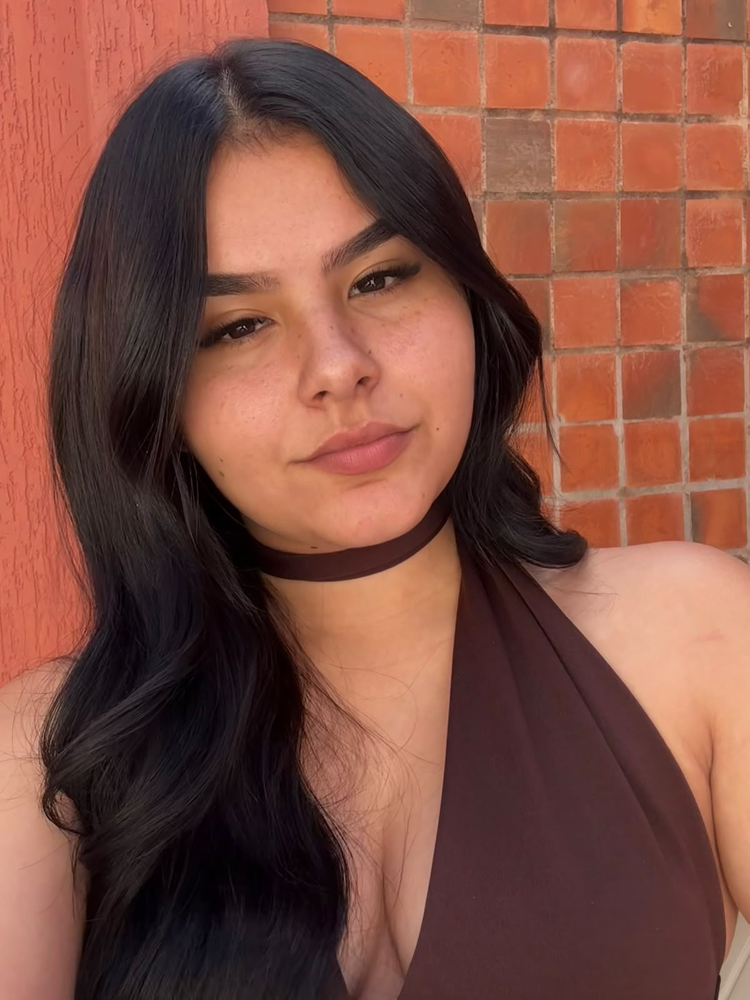
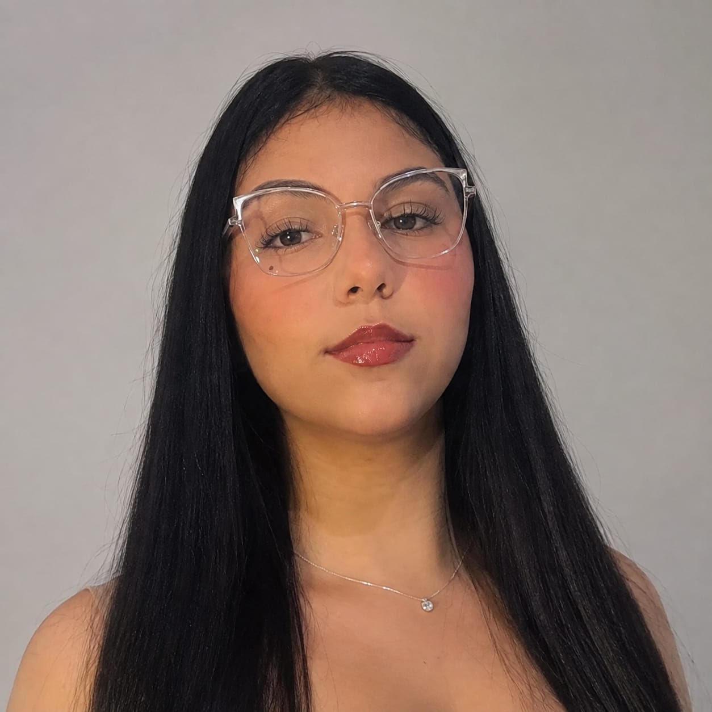
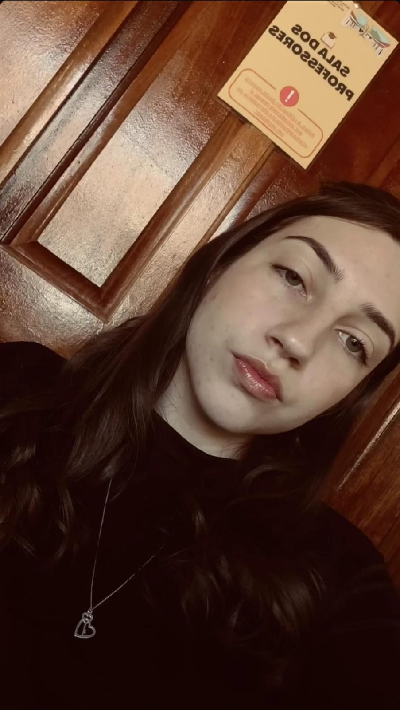

Autonomia
Usar o computador com mais independência.
Um mouse integrado a uma sandália para controlar o computador com os pés. Feito para quem tem limitações ou não usa os membros superiores.
A tecnologia não deve exigir que todos sejam iguais.
Ela deve se adaptar às pessoas.
Usar o computador com mais independência.
Uma alternativa aos periféricos pensados só para as mãos.
Um conceito direto: o mouse vai na sandália.
Um caminho simples, do pé até o computador.
Você movimenta o pé com a sandália adaptada.
O movimento do dispositivo controla o cursor.
Os comandos chegam ao computador e você interage com ele.
Vídeo em breve


